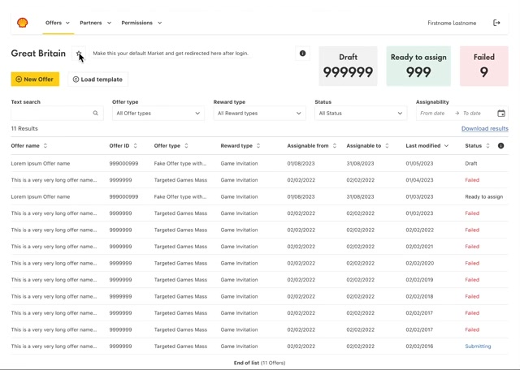
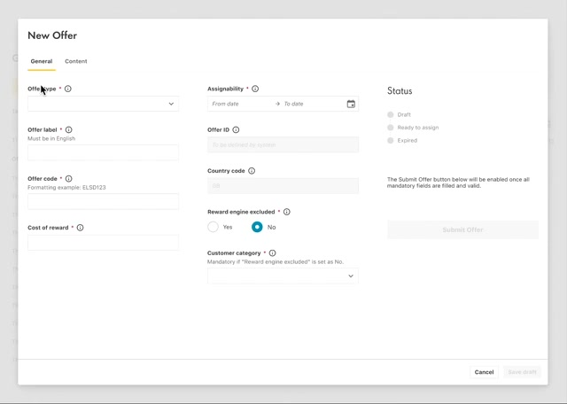
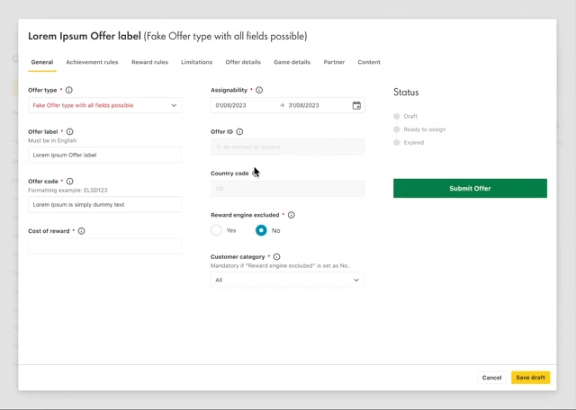
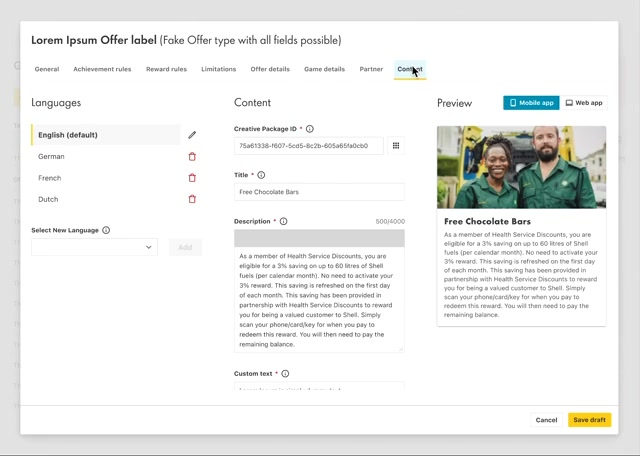
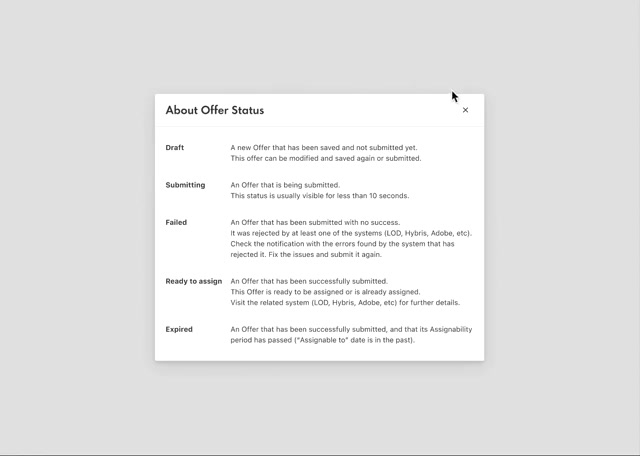
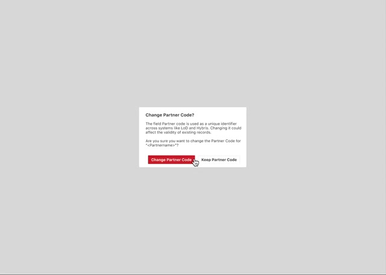
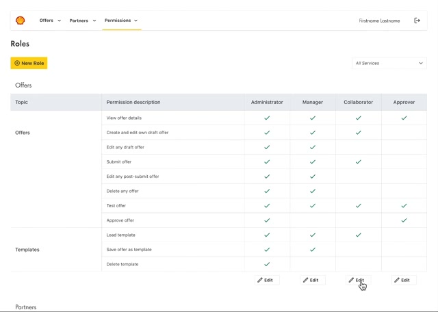
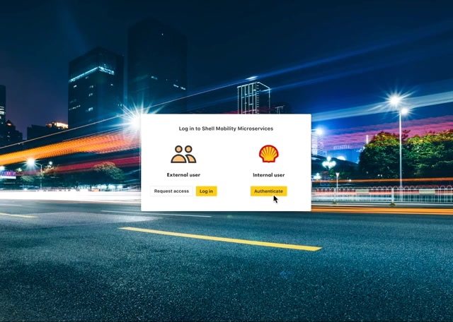
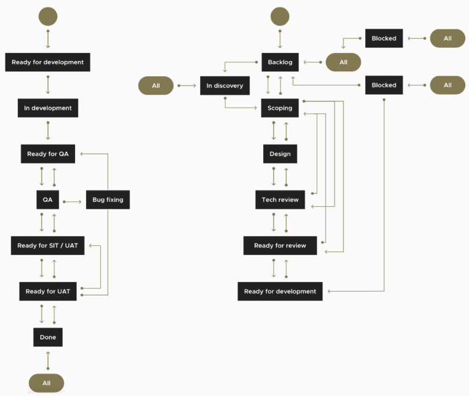
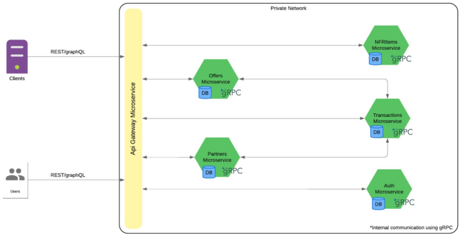

An internal tool that lets Shell's markets create loyalty offers and set up partners themselves, instead of waiting 8 to 12 weeks.
Client
Shell Mobility
Agency
DEUS.AI
When
2023
My role
Lead product designer
Users
Offer teams per market, approvers, admins and external partners
The prototype I designed, end to end. Sign in, the market dashboard, a new offer, partners and roles. Content is placeholder. Under 1.5 minutes, no sound.
Context and role
Shell runs loyalty offers in many markets, often with partner brands: discounts on fuel, rewards, games. In 2023 Shell asked DEUS.AI to replace the manual processes, legacy systems and siloed teams behind them. The engineering team rebuilt the back end as microservices. I led the design of the tool people use on top of it.
I researched needs and constraints through stakeholder interviews, task analysis and shadowing.
I wrote scenarios with the team and turned requirements into flows and a service blueprint.
I built interactive prototypes and validated them with stakeholders.
I designed the interface for offers, partners, users and roles.
The problem: 8 to 12 weeks per offer
A new loyalty offer took 8 to 12 weeks to go live. The time went into:
manual, error-prone steps to create offers and onboard partners;
physical sign-offs before an offer could move on;
updates in several legacy systems that didn't share data, so errors appeared late and far from their cause;
no shared view of offers and partners across departments.
Markets couldn't react to competitors or seasons, and partners waited months to be set up.
What research changed
I interviewed the people who create, approve and support offers, shadowed them through real requests, and broke the work into tasks to find where it stalled.
We sawOffers sat for weeks waiting for signatures on paper.
So I designedApproval inside the tool: an Approver role with its own permissions, so sign-off is a step, not an email chase.
We sawEach market runs its own offers and rarely looks at others.
So I designedA dashboard scoped to one market, with a default market that opens after login.
We sawMany offers repeat with small changes.
So I designedTemplates: load one to start an offer, save any offer as one.
We sawErrors appeared only after an offer reached the loyalty systems.
So I designedValidation before submit, and a Failed status that explains which system rejected the offer and what to do.
We sawPartners depended on Shell staff for every change.
So I designedA separate sign-in for external partners, so they can request access and keep their own details up to date.
Service blueprint: log in and create an offer. User steps on top; screens and system calls below: credentials checked in SIMAAS or CIPM, offer data validated by COCO, the approved offer uploaded to the loyalty systems. The two red points are where things fail, and the design answers both: clear sign-in errors, and validation before submit. Select to open full size.
Design decisions
Open on what needs attention
The dashboard opens on the user's market with three counters on top: drafts, offers ready to assign, and failed offers. Each counter is a filter, so the first thing an offer manager sees is the work waiting for them. A star makes a market the default after login.

Market dashboard. Status counters as entry points; the star sets the default market.
A form that grows with the offer type
Offer types need very different data. The form starts with the basics, and once the type is chosen it adds only the tabs that type needs: achievement rules, rewards, limits, game details, partner, content. Submit stays disabled, with a line explaining why, until every mandatory field is valid. Content is written per language with a live preview for the mobile and web apps.
Trade-off: a complex offer still means eight tabs. I kept them as tabs rather than a wizard, because experienced users jump between sections while they edit.

Start. Two tabs; Submit explains why it is disabled.

Type chosen. The tabs that type needs; Submit enabled.

Content. One version per language, previewed as the customer sees it.
Explain failure where it happens
An offer can be rejected by any of the systems behind the tool. The status legend says in plain words what each status means and what to do, and actions that ripple into other systems, such as changing a partner code used by LoD and Hybris, say so before they happen.

Status legend. Failed names the systems and the fix: check the errors, correct, submit again.

Consequences first. The dialog names the systems affected before the change.
Permissions instead of signatures
Physical sign-offs became four roles: administrator, manager, collaborator and approver, each defined per service. The matrix shows exactly who can create, edit, submit, test, approve or delete. Shell staff sign in with their company account; partners use their own door.
Trade-off: a permission matrix is dense. It is only for administrators, and making every permission visible was the price of replacing paper sign-offs in a regulated business.

Roles. Only approvers and administrators can approve an offer.

Two doors. Partners request access or log in; Shell staff authenticate with their company account.
How it was built
Design ran one step ahead of development. Discovery work (scoping, design and a technical review) fed a delivery board with QA and user acceptance testing, and prototypes changed after each review with stakeholders.

Two tracks. Discovery on the right (backlog, scoping, design, tech review) feeding delivery on the left (development, QA, acceptance testing).

The engineering team's architecture. An API gateway in front of separate services for offers, partners, transactions and authentication, talking to each other over gRPC.
Results
100 days → 10 minto onboard a partnerPartner self-service and in-tool setup.
2 days → 15 minto create a rewardTemplates and a form that asks only what is needed.
9× fewererrors in offer assignmentsValidation before submit.
3× fastertime to marketProcess and platform together.
8× fasterdevelopmentThe new architecture.
Halfthe cloud infrastructure costThe new architecture.
Figures as reported by the project. The first three are where the tool's design did the work; the last two come from the engineering platform.
Lessons
Approvals are a design problem
Replacing paper sign-offs meant designing the permission model with the people who sign, not only the screens they click.
One tool, two audiences
Partners and Shell staff work on the same offers but need different doors, words and permissions. Designing for both from the start avoided a second tool later.